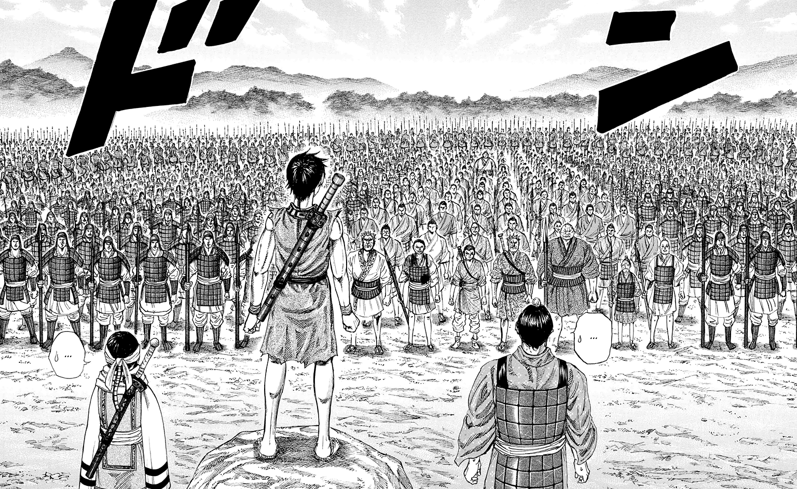

Ínicio
Ao longo dos séculos, civilizações floresceram, impérios ruíram e ideias transformaram o mundo — tudo impulsionado por estratégias. De campos de batalha a mesas de negociação, de revoluções silenciosas a campanhas brilhantemente orquestradas, a história está repleta de momentos em que o planejamento inteligente e a visão estratégica mudaram o rumo dos acontecimentos. Neste site, exploramos as táticas, decisões e manobras que marcaram eras e influenciaram o presente. Aqui, você encontrará análises de estratégias militares, políticas, econômicas e sociais — sempre contextualizadas e examinadas com profundidade. Quer você seja um estudioso da história, um estrategista moderno ou apenas curioso sobre os bastidores das grandes transformações, este espaço foi feito para você. Prepare-se para mergulhar em histórias fascinantes de poder, astúcia e liderança. Porque entender o passado é uma das melhores formas de traçar o futuro.
